Quest allows users to stay motivated while learning the Common Core State Standards
Discovery
Data:
72% of teachers believe that students are motivated by competition and leveling up features
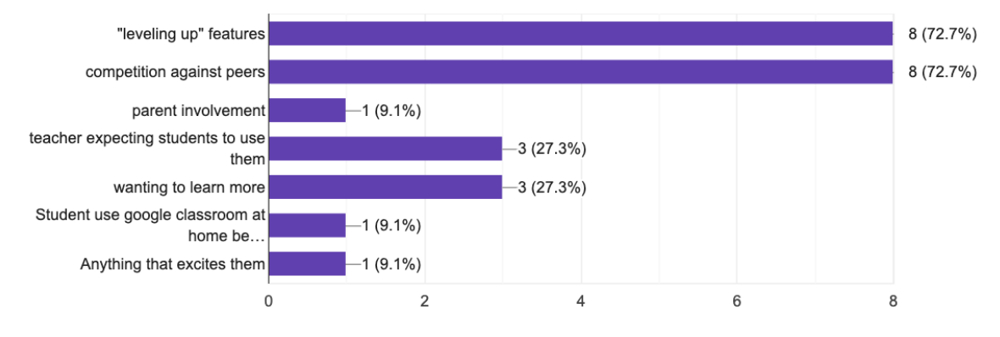
Data:
76.9% of teachers need access to Common Core State Standards on their educational websites to track student skills
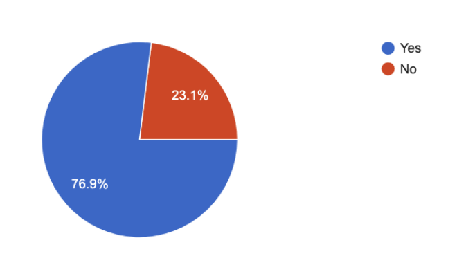
What was learned:
Teachers need a more inclusive website that combines grades, Common Core State Standards, and a platform that still engages students.
Personas:
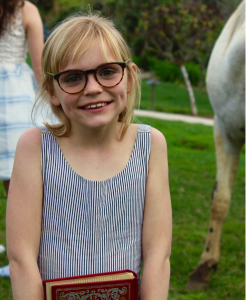
Sarah Gardner is a student who wants to be pushed to learn without teacher guidance, but struggles with the user interface.
Age: 10
Occupation: Student
Status: single
Location: Palatine, IL
Dayana Stevens is a mother who wants to be able to give her child work based on what the teacher is teaching, but struggles with the user interface.
Age: 45
Occupation: Executive Recruitment
Status: Married
Location: Chicago, IL
Allison Frank is a teacher who looks for unique educational websites that have an easy user interface.
Age: 47
Occupation: Educator
Status: Married
Location: Palatine, IL
Competitive Analysis:
Google classroom, Freckle, and SeeSaw were researched to help gain insight on how to compete. Google classroom and SeeSaw has an interactive dashboard, and assignments can be made. Freckle has specific content practice, but has leveling up features that are motivating to students. The one thing they all had in common was data tracking, and communication with parents. These are essential to compete with educational technology.
Google Classroom
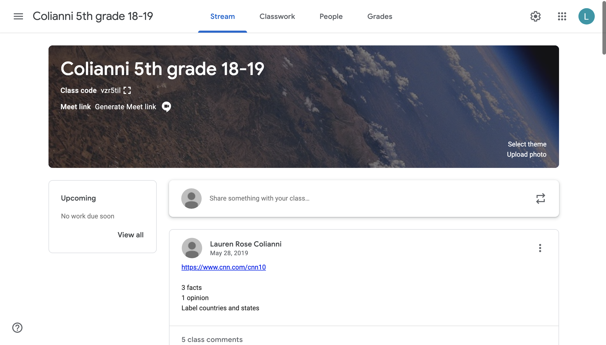Freckle

SeeSaw
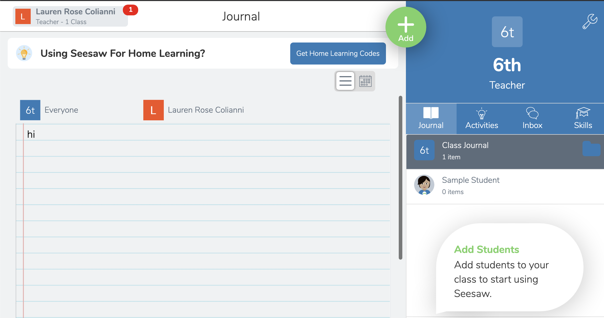Branding
Logo
Sketch:
Sketches started out revolving around adventure, mountains, oceans, forest, and a compass.

Mock up:
Everything needed to revold around adventure to appeal to students. Focusing on a hot airballoon representing traveling, adventure, and excitment.
Final:
In the end, I removed the fading colors to make it more vibrant and fun. I got rid of the box because we are promoting adventure, and the box seemed retraining. Lastly, we put the compass to inside the Q.
Color Palette:
Quest is promoting to students mainly children. The color palette needed to appeal to children, be fun vibrant and engaging. We also focused on adventure which is represented by the earth, which is why green and blue are the main colors.
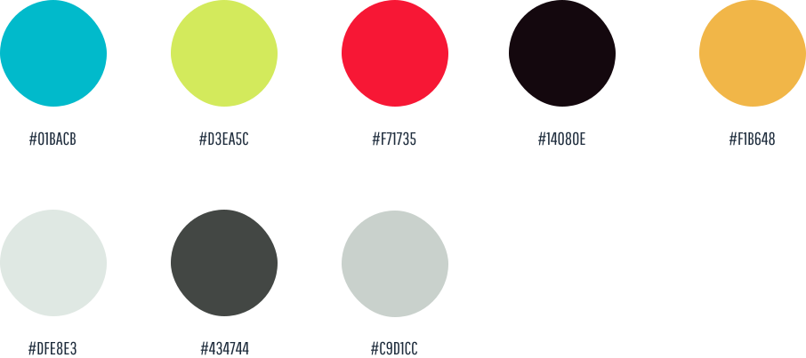Typography
The typography also needed to appeal to children but also not take away from the learning or make the user interface confusing. Chango was the most unique and has limited use. Didact Gothic is also unique but is easy to read and is used for headers. Roboto is very easy to read and is used for any large amounts of text.
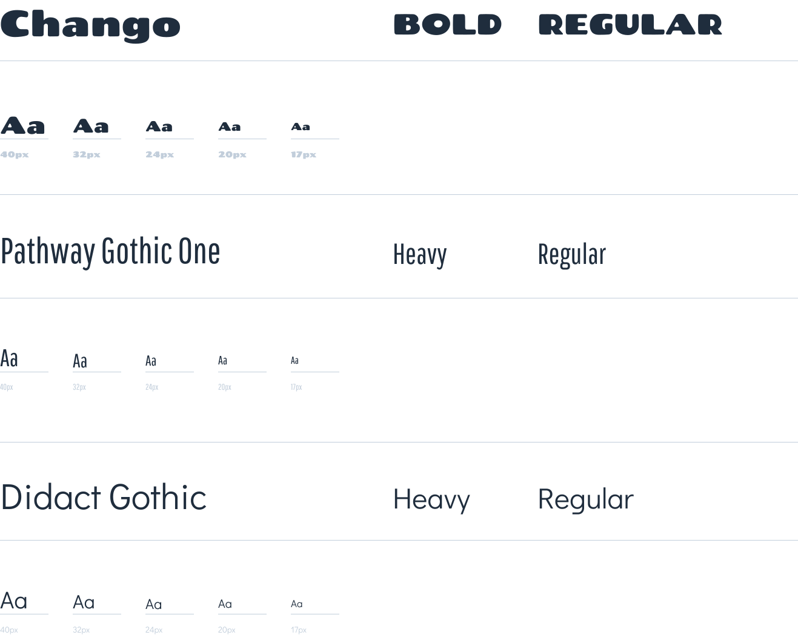Wireframes:
The wireframes help set the precedent of what a teachers dashboard will be like, and how that compares to a students view. The teacher allows for more options and more text. The students have more pictures, and limited text on a page. It helped us identify how both users have access to the same content but in different ways. Originally the dashboard and challenges were going to be together on the same page, but it felt too crowded and overwhelming. Especially since there were already so many buttons on the dashboard.
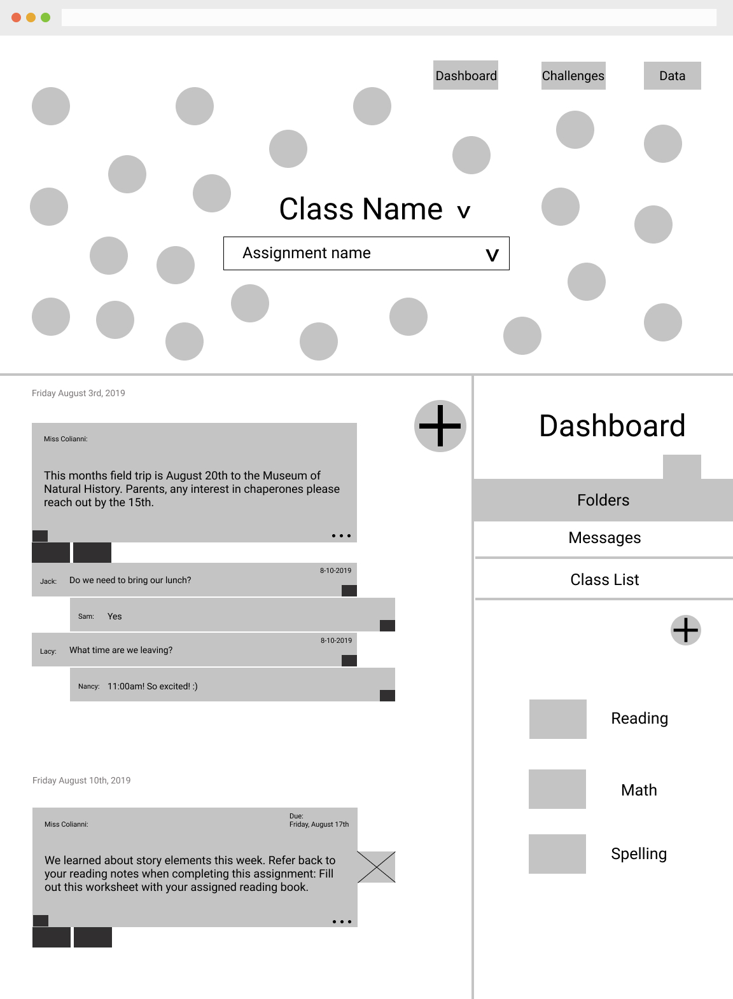
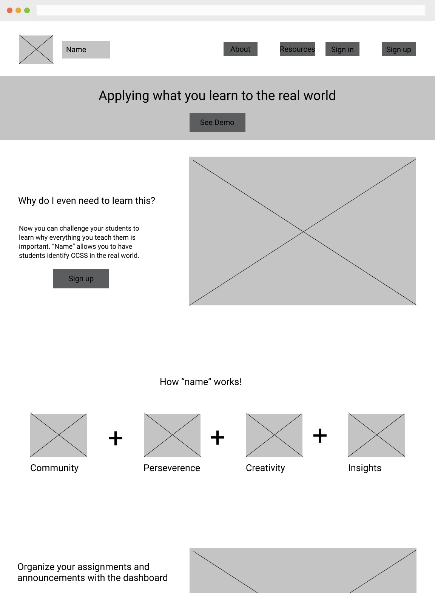
Perference Testing:
The dashboard header was tested for color preference. 83% preferred the blue header.
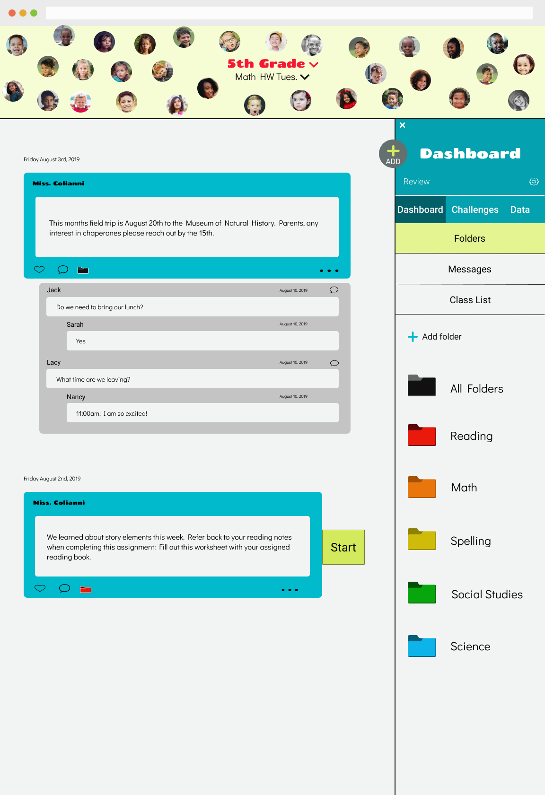
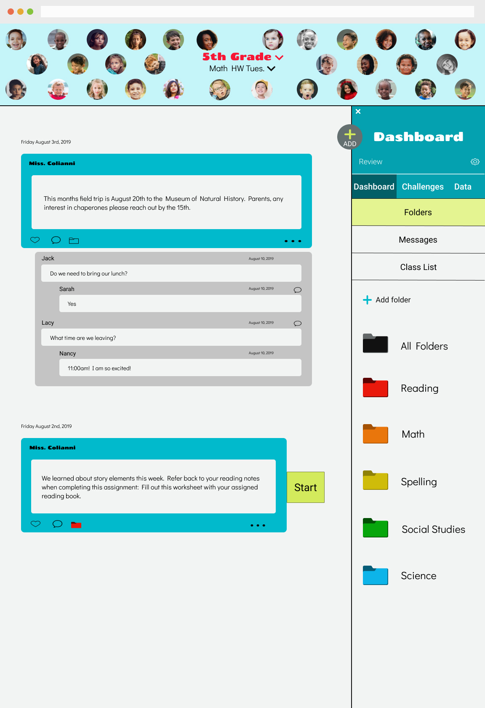
Usability Testing:
After user testing it was discovered that was not enough labels, even for the buttons. Teachers were able to identify what they did but struggled and made the experience more difficult. Labels were added to buttons to help identify what they do. Some labels were marked too similar as buttons and users replaced the button all together with the label. The label needed to be made more clear and less button-like. The biggest issue was for the data on the child’s perspective. They did not understand the language, and the content needed to be more kid friendly and color coded.